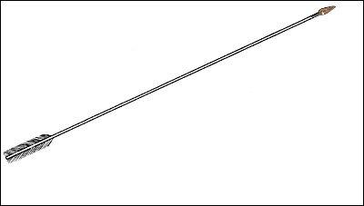
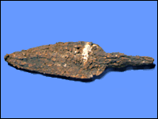

Arrow

This arrow head was discovered at Lachish (in modern Israel). It was probably used during the Assyrian attack on the city in 701 B.C. Bronze arrowheads were made using small clay moulds. The finished arrowheads were then attached to stiff reeds and placed in quivers for the archers.

|